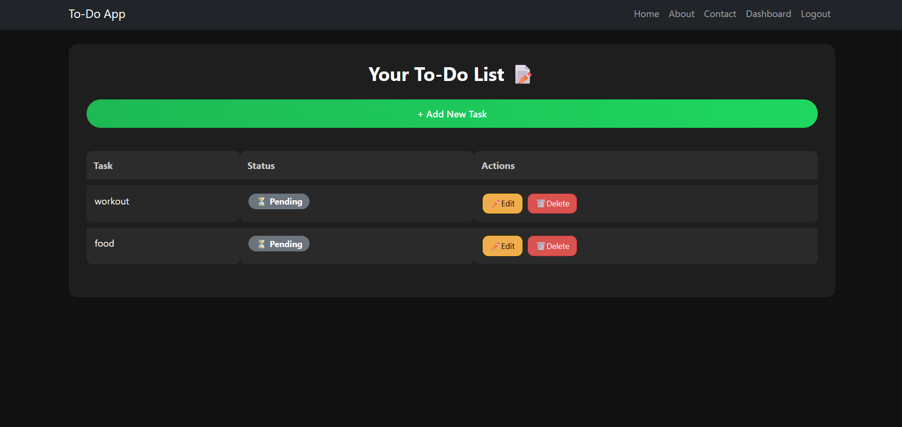
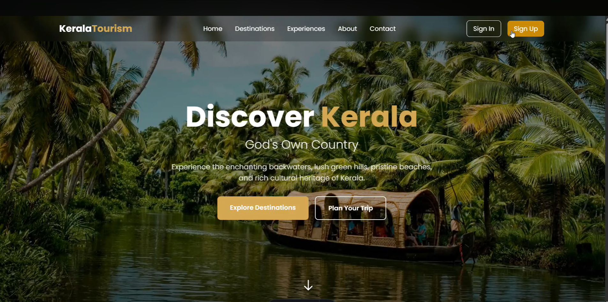
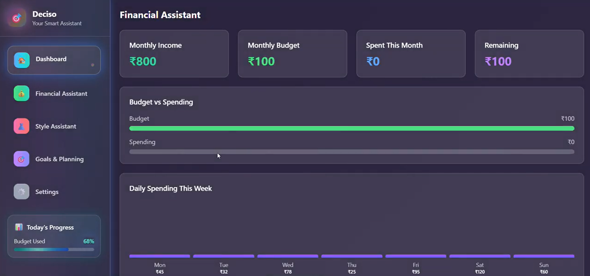
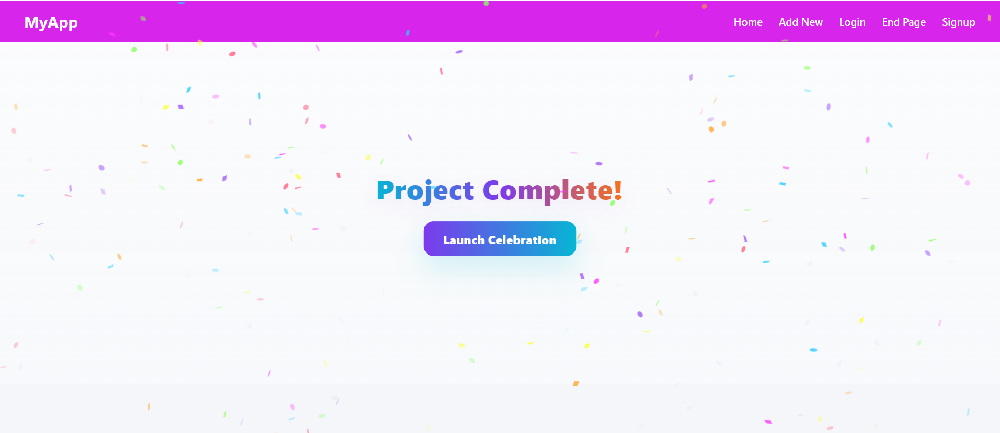
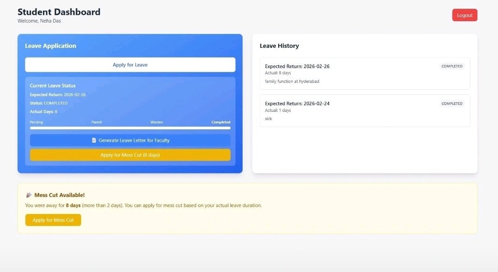

My Projects

To-Do List
This project is a To-Do List web application developed using Django. It allows users to register, log in, and manage their daily tasks in a simple and organized way. Each user has a personal dashboard where they can add, view, update, and delete tasks securely. The application includes user authentication, ensuring that tasks are private to each user. The interface is designed to be simple, responsive, and user-friendly, making it easy to track daily activities and improve productivity. This project helped me understand Django fundamentals, including models, views, templates, authentication, and database handling.
Tech Stack:

Tourist-host website
This project is a Tourist–Host web platform designed to help travelers find trusted and well-rated local hosts for a better travel experience. The system allows users to register either as a Tourist or a Host. Tourists can explore destinations and specify their travel preferences, while hosts can showcase their location, facilities, and experience. The platform focuses on authentic travel experiences rather than pricing or profit, helping tourists connect with reliable hosts based on ratings and suitability. The project aims to promote safe, transparent, and meaningful travel, especially for destinations in Kerala, by building trust between tourists and local hosts.
Tech Stack:

Desicio
Desicio is a smart decision-support website that helps people make perfect everyday decisions based on their salary and budget. The platform analyzes a user’s income and suggests how much money they can safely spend within a week, helping them manage expenses wisely. In addition to financial guidance, Desicio also assists users in costume selection for different occasions such as casual outings, functions, festivals, or formal events, based on budget and suitability. The main goal of Desicio is to help users make confident, practical, and personalized decisions in daily life without financial stress.
Tech Stack:

E-Commerce Website
A fully functional e-commerce web application built with React and JavaScript. Features include product listing, shopping cart, and a clean responsive UI. Built during an internship to practice component-based architecture, state management, and modern React development practices.
Tech Stack:

QR Based Hostel Leave Management System
A mini project developed in S6 that digitizes the hostel leave process using QR codes. Students can apply for leave online and generate a QR code, which wardens scan to approve or verify leave requests. The system eliminates paperwork, reduces manual errors, and makes the entire leave workflow faster and more transparent.